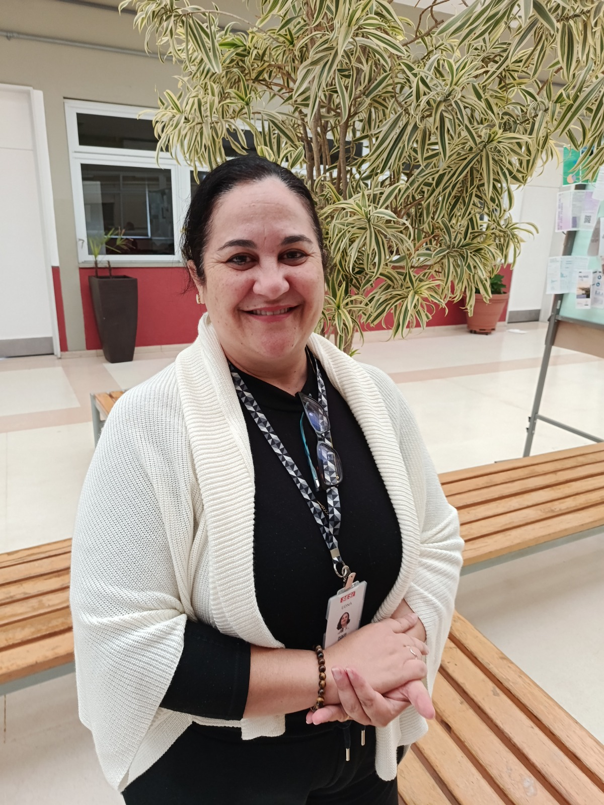

"Trabalhar com educação é caminhar e promover o presente junto com os alunos."
Clique para ler a entrevista completa
Minha trajetória pessoal começou aos 14 anos como assistente num escritório de advocacia. Me formei em Direito e atuei 12 anos no jurídico de uma instituição financeira. Depois empreendi abrindo um café e passei por momentos desafiadores na vida pessoal. Após o nascimento da minha filha Manu, decidi realizar o sonho de ingressar na educação e me graduei em Geografia. Passei pela Prefeitura de Itatiba e hoje estou muito feliz aqui no SESI.
O que eu mais amo no meu trabalho são os alunos! Gosto do entrosamento, de dar explicações e de ouvir os questionamentos críticos de vocês. O setor educacional promove todos os outros setores da economia. Fazer essa transição de carreira para a educação buscando um propósito maior foi o meu grande desafio e, ao mesmo tempo, minha maior conquista profissional.
Minha família é repleta de mulheres fortes e inspiradoras, como minha mãe e minhas avós. Como mensagem, peço que vocês sejam sempre vocês mesmos, críticos, e extremamente gentis com qualquer manifesto de vida à sua frente. Sigamos juntos sempre!

"Trabalhar com educação exige paciência, carinho, amor e vocação."
Clique para ler a entrevista completa
Iniciei minha trajetória no SESI no começo de 2024 após passar pelo processo seletivo e apresentar uma aula para a equipe de gestão. O que eu mais gosto na minha rotina são as minhas crianças. A importância de lecionar está no ato de ensinar e no carinho diário que construímos com os alunos.
Na minha trajetória profissional, um dos desafios mais marcantes foi ter dado aulas em uma escola que atendia crianças da Fundação CASA. Conseguir minha vaga no SESI foi a conquista profissional que mais me marcou. Para mim, trabalhar com educação exige muita paciência, amor e carinho.
Minha mãe sempre foi a minha maior inspiração. Meu conselho para os estudantes é pensar no futuro e dar valor ao momento presente de estudos, pois a cada ano a conquista de um lugar na sociedade exige mais preparo. Prestem atenção nas aulas, pois o conhecimento faz falta no futuro.

"É uma honra poder ensinar, trazer conhecimento e ver o crescimento dos alunos."
Clique para ler a entrevista completa
Me formei em 2016, trabalhei cerca de cinco anos na Educação Infantil e depois migrei para o Ensino Fundamental. Entrei no SESI no início do ano para lecionar no Fundamental 1 com o 4º e 5º ano. O que eu mais amo é a dinâmica do dia a dia, ouvir as crianças e trazer vivências para a rotina deles. Vejo o Fundamental 1 como a base do desenvolvimento escolar.
No início da carreira enfrentei o desafio de assumir uma turma inteira sozinha sem ter experiência anterior. Como conquista profissional marcante, destaco o dia em que apresentei um trabalho ao vivo para a rede de Campinas. Para mim é uma honra acompanhar a evolução e o conhecimento das crianças.
Minha grande inspiração é minha madrasta. O conselho que deixo para os estudantes é que continuem estudando, pois o conhecimento ninguém nos tira. Escolham uma profissão por amor e estejam sempre em constante aperfeiçoamento.